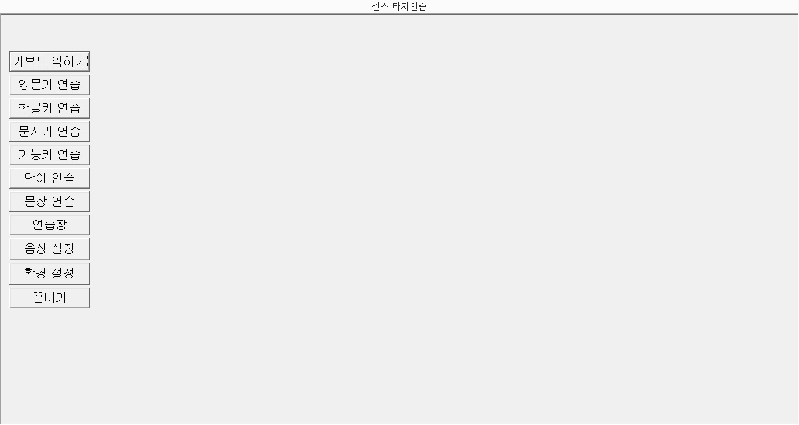
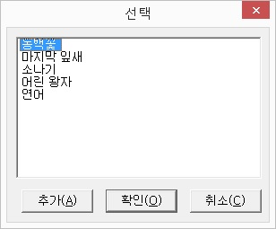
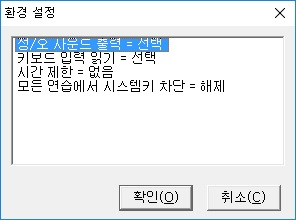

센스 타자연습은 음성을 통해 키보드 타이핑 연습을 할 수 있도록 만들어진 시각장애인용 윈도 타자연습 프로그램입니다.

키보드 위치를 알려주는 '키보드 익히기' 기능에서부터 영문, 한글, 단어 연습 등에 이르기까지 다양한 각도에서의 연습을 할 수 있는 기능을 제공하며, 각 기능별로 연습한 결과를 알려주기 때문에 현재의 실력을 쉽게 파악하고 보완해 나가는데 많은 도움을 줄 것입니다.
또한 센스리더의 기능키들을 미리 익힐 수 있어 초보자들이 센스리더를 처음 사용할 때 많은 도움을 줍니다.
센스 타자연습은 설치시 바탕화면과 시작 메뉴에 프로그램을 실행하기 위한 단축 아이콘을 등록합니다. 이를 통해 쉽게 실행할 수 있습니다.
1. 바탕화면 아이콘 사용
① 바탕화면으로 이동합니다.
② 센스 타자 연습 단축 아이콘을 찾습니다.
③ <Enter>키를 눌러 실행합니다.
2. 시작 메뉴 사용
① 시작 메뉴를 호출합니다.
② [프로그램] -> [센스리더] 항목까지 차례로 이동합니다.
③ [센스 타자 연습] 메뉴 항목을 찾아 실행합니다.
* 센스 타자 연습은 센스리더와 연동하여 돌아가는 프로그램입니다. 만일 센스리더가 실행되어 있지 않다면 센스 타자 연습은 정상적으로 실행되지 않습니다.
센스 타자 연습의 화면은 다음과 같이 크게 두 부분으로 나뉘게 됩니다.
1. 제목 표시줄: 화면의 가장 상단에 위치하며, 프로그램의 이름이 표시됩니다.
2. 연습 창: 프로그램 동작의 모든 출력이 이루어지는 곳으로 제목 줄 아래 모든 영역을 차지합니다. 연습에 들어가기 전에는 동작을 선택하기 위한 메뉴들이 표시되고, 연습이 끝난 후에는 결과가 표시되는 곳이기도 합니다.
결과는 정타수, 오타수, 점수, 속도, 연습 시간 등의 정보를 표시합니다.
* 약시자의 경우 연습 창에 표시되는 글자의 크기를 시력 정도에 따라 조정할 수 있습니다. 단어 연습이나 문장 연습을 실행한 이후 화면에 표시되는 '글꼴 바꾸기' 버튼을 눌러 글꼴, 크기, 스타일 등의 정보를 사용자가 필요한 상태로 지정합니다.
키보드의 위치를 알려주는 기능입니다.
다음 순서에 따라 키보드 익히기 연습을 합니다.
① 메인화면에서 '키보드 익히기' 버튼을 누릅니다.
② 키보드 익히기에 들어가면 아무 키나 눌러 보면서 키보드의 위치를 확인합니다.
사용자가 키를 누르면 눌려진 키가 어떤 키인지 알려줍니다. 키를 빨리 두 번 누르면 풀어 읽어 줍니다.
③ <Escape>키를 누르면 처음 화면으로 돌아갑니다.
영문키를 중심으로 연습합니다.
다음의 과정에 따라 영문키 연습을 합니다.
① 처음 화면에서 '영문키 연습' 버튼을 누릅니다.
② 연습할 범위에 해당하는 버튼을 누릅니다.
'...까지'에 해당하는 버튼은 그 버튼 앞에 있는 모든 버튼을 포함합니다.
③ 선택한 범위에 해당하는 키 중 하나를 불러줍니다.
④ 타자연습이 불러준 키에 해당하는 키를 누릅니다.
⑤ 눌려진 키가 문제의 키와 다르면 다시 불러줍니다. 키가 맞다면 다른 키를 음성출력합니다.
⑥ <Escape>키를 누르면 연습을 마치고 지금까지의 결과를 알려줍니다.
⑦ 결과 화면에서 <Enter>이나 <Escape>키를 누르면 연습할 범위를 고르는 화면으로 돌아갑니다.
⑧ 처음 화면으로 돌아가려면 다시 <Escape>키를 누릅니다.
한글키를 중심으로 연습합니다.
다음 과정에 따라 연습을 진행합니다.
① 메인화면에서 '한글키 연습' 버튼을 누릅니다.
② 연습할 범위에 해당하는 버튼을 누릅니다.
'...까지'에 해당하는 버튼은 그 버튼 앞에 있는 모든 버튼을 포함합니다.
③ 선택한 범위에 해당하는 키 중 하나를 불러줍니다.
④ 불러준 키에 해당하는 키를 누릅니다.
⑤ 눌려진 키가 문제의 키와 다르면 다시 불러줍니다. 키가 맞다면 다른 키를 음성출력합니다.
⑥ <Escape>키를 누르면 연습을 마치고 지금까지의 결과를 알려줍니다.
⑦ 결과 화면에서 <Enter>이나 <Escape>키를 누르면 연습할 범위를 고르는 화면으로 돌아갑니다.
⑧ 처음 화면으로 돌아가려면 다시 <Escape>키를 누릅니다.
영문과 한글을 포함한 모든 문자키를 연습합니다.
다음의 과정에 따라 문자키 연습을 합니다.
① 처음 화면에서 '문자키 연습' 버튼을 누릅니다.
② 센스 타자연습 프로그램이 문자키 중 하나를 불러줍니다.
③ 불러준 키에 해당하는 키를 누릅니다.
④ 눌려진 키가 문제의 키와 다르면 다시 불러줍니다. 키가 맞다면 다른 키를 불러줍니다.
⑤ <Escape>키를 누르면 연습을 마치고 지금까지의 결과를 알려줍니다.
⑥ 결과 화면에서 <Enter>키나 <Escape>키를 누르면 처음 화면으로 돌아갑니다.
기능키(F1~F12), 화살표 및 모든 조합키를 연습합니다.
다음 과정에 따라 연습을 진행합니다.
① 메인화면에서 '기능키 연습' 버튼을 누릅니다.
② 기능키 중 하나를 불러줍니다.
③ 불러준 키에 해당하는 키를 누릅니다.
④ 눌려진 키가 문제의 키와 다르면 다시 불러줍니다. 키가 맞다면 다른 키를 음성출력합니다.
⑤ <Escape>키를 누르면 연습을 마치고 지금까지의 결과를 알려줍니다.
⑥ 결과 화면에서 <Enter>이나 <Escape>키를 누르면 처음 화면으로 돌아갑니다.
하나의 키가 아닌 단어 입력을 연습합니다.
다음 과정에 따라 단어 입력 연습을 진행합니다.
① 메인화면에서 '단어 연습' 버튼을 누릅니다.
② 센스 타자 연습 프로그램이 한 단어를 말해 줍니다.
③ 해당 단어를 입력한 다음 <Space>키나 <Enter>키를 누릅니다.
④ 입력한 단어가 문제의 단어와 다르면 다시 불러줍니다. 단어가 맞다면 다른 단어를 읽어줍니다.
⑤ <Escape>키를 누르면 연습을 마치고 지금까지의 결과를 알려줍니다.
⑥ 결과 화면에서 <Enter>이나 <Escape>키를 누르면 처음 화면으로 돌아갑니다.
타자연습 프로그램에 등록되어 있는 파일이나 사용자가 등록한 파일을 통해 문장 연습을 합니다.
다음 과정에 따라 문장 연습을 진행합니다.
① 메인화면에서 '문장 연습' 버튼을 누릅니다.
② '선택' 대화상자가 나타나면 목록에서 연습을 원하는 파일 항목을 선택하고 <Enter>키를 누르거나 '확인' 버튼을 누릅니다.
③ 센스 타자연습 프로그램이 선택한 파일의 한 단어를 말해줍니다.
④ 해당 단어를 입력 후 <Space>키나 <Enter>키를 누릅니다.
⑤ 입력한 단어가 문제의 단어와 다르면 다시 같은 단어를 말해 주고 단어가 맞다면 다음 단어를 불러줍니다. 만약, 현재 단어를 통과하고 싶다면 <Tab> 키를 누릅니다.
⑥ <Escape>키를 누르면 연습을 마치고 지금까지의 결과를 알려줍니다.
⑦ 결과 화면에서 <Enter>키나 <Escape>키를 누르면 처음 화면으로 돌아갑니다.

* 파일 등록하기
센스 타자 연습에서는 문장 연습으로 사용할 파일을 사용자가 등록하여 사용할 수 있습니다.
① '선택' 대화상자에서 '추가' 버튼을 누릅니다.
② '열기' 대화상자가 나타나면 등록을 원하는 파일을 지정한 후 '열기' 버튼을 누릅니다.
③ '선택' 대화상자로 돌아오면 목록에 새로운 파일이 등록되어 있습니다.
* 문장 연습으로 사용할 파일은 반드시 완성형 텍스트 파일이어야 합니다.
센스 타자연습 프로그램이 누를 키를 불러주지 않고 사용자가 자유로이 입력 연습을 합니다.
다음 과정에 따라 연습을 합니다.
① 메인화면에서 '연습장' 버튼을 누릅니다.
② 입력하고 싶은 글자들을 입력해 봅니다.
③ <Escape>키를 누르면 연습을 마치고 지금까지의 결과를 알려줍니다.
④ 결과 화면에서 <Enter>이나 <Escape>키를 누르면 처음 화면으로 돌아갑니다.
키보드 연습시 출력되는 음성에 대한 설정을 합니다.
다음 과정에 따라 설정을 변경할 수 있습니다.
① 메인화면에서 '음성 설정' 버튼을 누릅니다. '음성 출력 설정' 대화상자가 나타납니다.
② <Tab>키나 <Shift-Tab>키를 사용해 설정을 원하는 항목을 선택합니다. 속도, 크기, 높이의 세 가지가 있습니다.
③ 화살표키를 사용해 항목의 설정값을 알맞게 조절합니다.
④ '확인' 버튼을 눌러 변경된 값을 적용시킵니다.

다음 과정에 따라 설정을 변경할 수 있습니다.
① 메인화면에서 '환경 설정' 버튼을 누릅니다.
② '환경 설정' 대화상자가 나타나면 화살표를 사용하여 목록 중 변경을 원하는 항목을 선택합니다.
③ <Space>키나 기타 지정된 키들을 사용해 원하는 값으로 변경합니다.
④ '확인' 버튼을 눌러 변경 사항을 적용합니다.
* 변경 가능한 항목은 다음과 같습니다.
1. 정/오 사운드 출력: 정답과 오답을 알려주는 사운드의 출력 여부를 선택합니다.
2. 키보드 입력 읽기: 키 입력을 음성으로 알려줄 지 여부를 선택합니다.
3. 시간 제한: 사용자가 연습을 원하는 타자연습 시간을 설정합니다. 기본값은 '없음'이며, 사용자가 지정한 시간이 되면 현재 실행 중인 연습 모드가 종료되고 결과창을 표시합니다.
지정할 수 있는 연습 시간은 1분에서 300분까지이고, 다음의 키들을 이용하여 시간 설정을 변경할 수 있습니다.
<Space>: 연습 시간 1분 증가 <Shift-Space>: 1분 감소
<Ctrl-Space>: 10분 증가 <Ctrl-Shift-Space>: 10분 감소
4. 모든 연습에서 시스템키 차단 : 타자연습을 진행하는 중에 'Alt' 또는 '윈도우(로고)'키와 같은 시스템 키를 차단할지 여부를 선택합니다. 기본값은 '해제'이며, 스페이스바를 이용한 선택이 가능 합니다.
메인 화면의 '끝내기' 버튼을 누르면 센스 타자연습 프로그램을 종료합니다.
또한, 센스 타자연습을 종료하기 위해서는 프로그램의 어느 위치에서든 상관없이 <Alt-F4>키를 눌러도 됩니다.